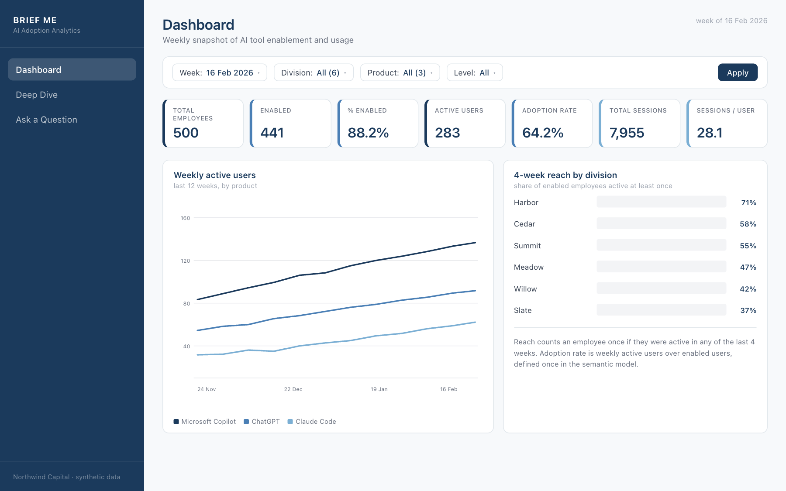

Talk to your data
Brief Me
AI adoption analytics you can question in plain English. A Snowflake Cortex agent writes the SQL over 500 synthetic employees at a fictional bank, reads its own results, and exports the deck.
Next.jsSnowflake Cortex AnalystSemantic model